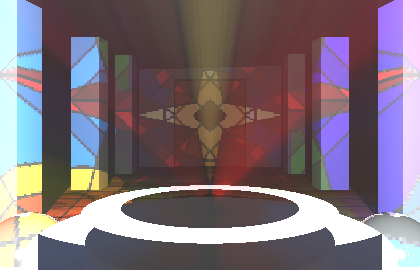
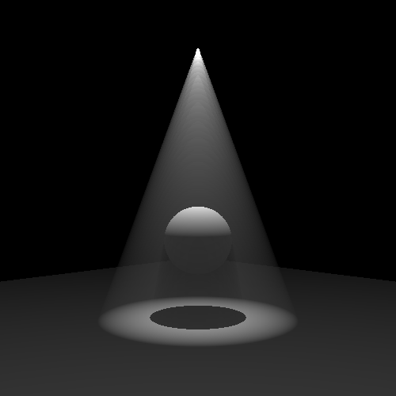
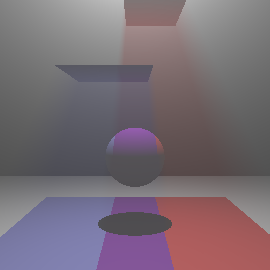

Ray Tracing in Participating Media
Advanced Computer Graphics Final Project, 2023
Language: C++
GitHub (Ray Tracer)
A teammate and I extended an implemention ray tracing from a previous assignment to now allow for an approximation of single-scatter ray tracing through a uniform participating media.
My contributions to this project include:
- Implementing volumetric shadows through ray casting during ray marching
- Enhancing our implementation of ray tracing and light volumes by factoring in intersections with semi-transparent materials to color the light, giving a stained-glass-like effect


